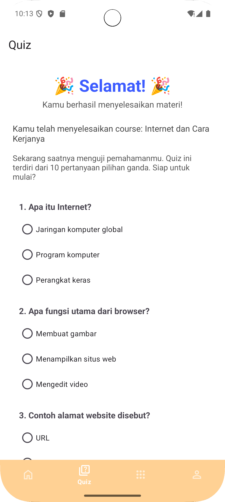
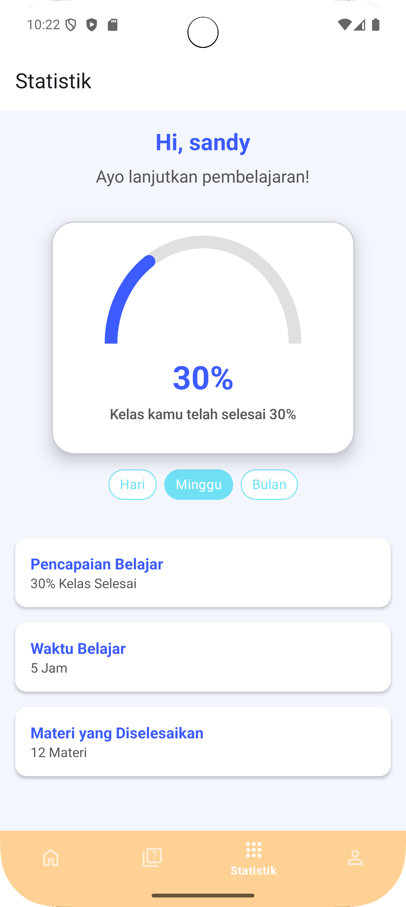

Karya/Zona Bakat
Zona Bakat
Aplikasi kursus daring di Android: katalog materi, pemutar pelajaran, kuis, dan statistik progres yang tetap ada setelah aplikasi ditutup.
- Tahun
- 2025
- Platform
- Android
- Tumpukan
- Kotlin · Android SDK
- Data
- Room (SQLite lokal)



Masalahnya
Kursus daring biasanya menuntut koneksi stabil dan akun terpusat. Zona Bakat mengambil arah lain: materi dan progres disimpan di perangkat, sehingga belajar tetap berjalan saat sinyal buruk.
Yang dibangun
- Dashboard berisi daftar kursus yang tersedia beserta kategori materi.
- Halaman detail kursus: video pembelajaran, deskripsi, dan daftar konten.
- Kuis pilihan ganda sebagai evaluasi setelah materi selesai.
- Pelacakan progres dalam bentuk persentase dan grafik.
- Halaman profil pengguna dengan ringkasan aktivitas belajar.
- Login untuk memisahkan data antar pengguna.
Keputusan teknis
Room, bukan API daring. Progres belajar adalah data yang paling sering dibaca dan paling jarang diubah. Menyimpannya di SQLite lokal lewat Room membuat statistik terbuka seketika, tanpa menunggu jaringan. Room juga memberi pemeriksaan query saat kompilasi, jadi kesalahan nama kolom ketahuan sebelum aplikasi dijalankan.
Material Design sebagai batasan, bukan hiasan. Komponen bawaan Android dipakai apa adanya agar navigasi terasa familiar bagi pengguna yang baru pertama membuka aplikasi.
Yang saya pelajari
Menyimpan progres terdengar sederhana sampai harus menjawab: apa yang terjadi kalau pengguna menutup aplikasi di tengah kuis. Menentukan kapan progres ditulis — per jawaban atau per sesi — mengubah seluruh alur layar kuis.